福島の子どもたちを迎え2016コヨットin埼玉を開催
7月16日（土）～18日（月・祝日）までの3日間、埼玉県生協連と埼玉県ユニセフ協会が共催で、2016コヨットin埼玉を埼玉県立小川げんきプラザで開催しました。東京電力福島第一原発事故の影響により屋外で遊ぶ機会の少なくなっている福島県の子ども達を迎え、埼玉県でおもいっきり遊び、埼玉の良さを実感してもらおうと開催しました。この取り組みでは、福島県生協連が子どもの募集を行い、19人が参加しました。
なお、今回は会員生協の情報紙などをとおして、生協組合員ボランティアを募集し2生協6人の組合員の皆さんが子ども達をサポートするボランティアとして参加いただきました。
2016コヨットin埼玉
- 共催
- 埼玉県生活協同組合連合会・埼玉県ユニセフ協会
- 協力
- 埼玉県ボーイスカウト連盟
スタッフ・ボランティア
学生ボランティア10人、組合員ボランティア6人、生協スタッフ9人
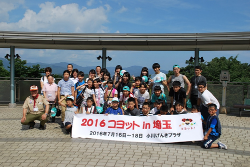
1．7月16日（土）
郡山駅に集合した子ども達は、迎えにいった学生ボランティア・生協スタッフとともに、バスで埼玉県にむけて出発しました。移動は順調で、予定より1時間早く小川げんきプラザに到着。昼食後は施設周辺を散策しました。14時からは、活動施設に移動し、小川げんきプラザへの入所式、ボーイスカウト連盟の皆さんによるグループづくりプログラムを行いました。
| 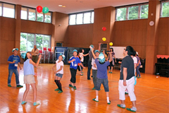 | 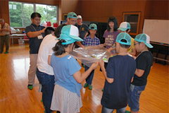 |
16時からは、歓迎行事をプラネタリウム室でおこないました。埼玉県生協連の会員生協から寄せられたメッセージをスライドにして上映し、参加いただいた生協の組合員・職員からあいさつをいただきました。
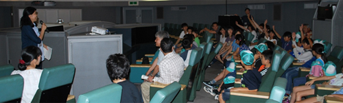
夕食後には、翌日におこなうキャンプファイヤーにむけて、歌やおどりの練習を行い、1日目のプログラムを終了しました。
| 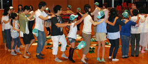 | 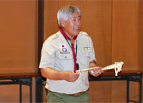 |
2．7月17日（日）
さいたま市にある鉄道博物館にバスで移動。子ども達の安全を確保するために現地集合で5人のボランティアが合流し、ジオラマ見学・運転士体験・館内自由見学を行いました。当日は大変な混雑の中、ボランティアの皆さんによる見守りにより、迷子を出すことなく、無事見学を終了することができました。
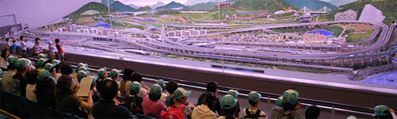
| 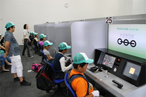 | 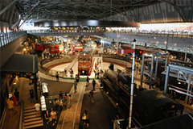 |
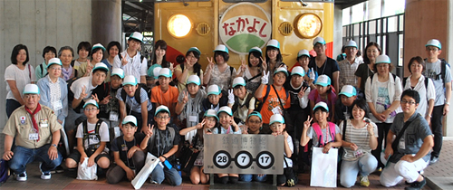
鉄道博物館を思いっきり楽しんだ後、小川げんきプラザに戻り、19時からはキャンプファイヤーを行いました。
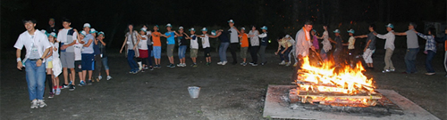
| 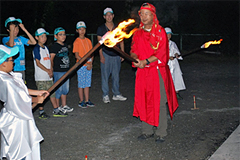 | 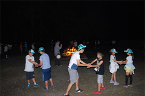 |
3．7月18日（月・祝日）
最終日は、小川げんきプラザで退所式をおこなった後、小川町にある埼玉伝統工芸館に移動し、ユネスコ無形文化財の細川和紙の和紙すき体験をおこないました。同施設にて昼食をとり、郡山駅に向けて出発しました。
| 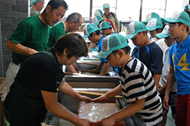 | 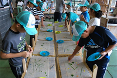 |
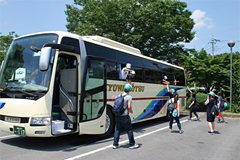